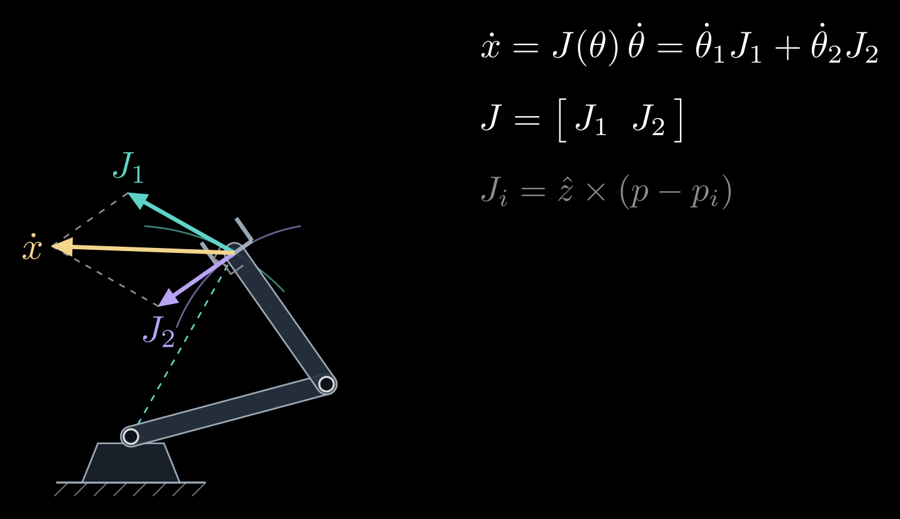
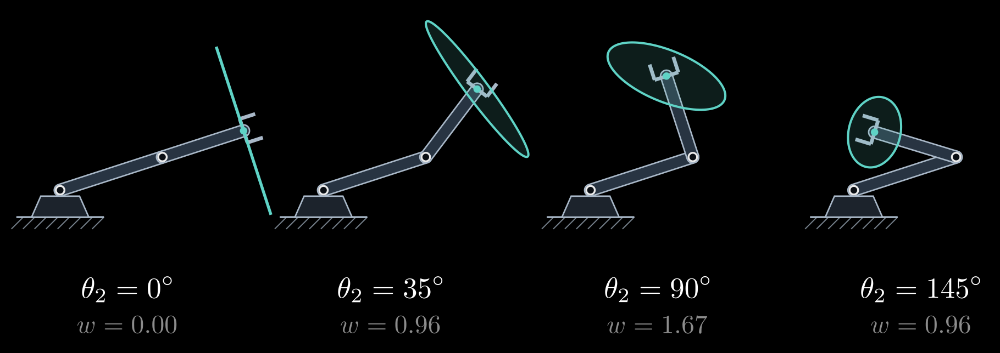
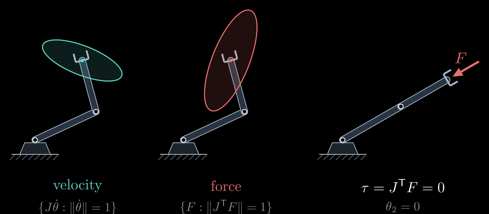

The Manipulator Jacobian
Forward kinematics says where the hand of a robot arm is for given joint angles. Differentiating it with respect to time says how fast the hand moves for given joint speeds:
\[\dot{x} = J(\theta)\, \dot{\theta}\]
Here \(\theta\) is the vector of joint angles, \(\dot\theta\) their rates of change (a dot means the derivative with respect to time), \(\dot x\) the hand's velocity, and \(J(\theta)\) the Jacobian, a matrix that changes with the configuration. This one matrix answers several practical questions about an arm: in which directions the hand moves easily, where it cannot move at all (the singularities), how joint torques turn into forces at the hand, and how to drive the hand along a straight line.
This is the last of four notes on robot arms, after 3D Rotations: Matrices, Euler Angles and Quaternions, Forward Kinematics and Inverse Kinematics.
From joint speeds to hand velocity
Write forward kinematics for the hand position as \(x = f(\theta)\), with \(m\) task coordinates (2 for a position in a plane, 3 in space) and \(n\) joints. By the chain rule,
\[\dot{x} = \frac{\partial f}{\partial \theta}\, \dot{\theta} = J(\theta)\, \dot{\theta}, \qquad J_{ij} = \frac{\partial f_i}{\partial \theta_j}\]
so \(J\) is an \(m \times n\) matrix whose entry in row i and column j says how much the i-th hand coordinate changes per unit change of the j-th joint angle. The relation is linear in the joint speeds, which is why velocities are much easier than positions: inverting forward kinematics for positions took a law of cosines or an iteration in Inverse Kinematics, while for velocities it is one linear solve.
For the two-link planar arm of Forward Kinematics, with link lengths \(L_1\) and \(L_2\), the hand's two coordinates are \(L_1\cos\theta_1 + L_2\cos(\theta_1 + \theta_2)\) and \(L_1\sin\theta_1 + L_2\sin(\theta_1 + \theta_2)\), and differentiating each with respect to both joint angles gives
\[J = \begin{bmatrix} -L_1 \sin\theta_1 - L_2 \sin(\theta_1 + \theta_2) & -L_2 \sin(\theta_1 + \theta_2) \\ L_1 \cos\theta_1 + L_2 \cos(\theta_1 + \theta_2) & L_2 \cos(\theta_1 + \theta_2) \end{bmatrix}\]
Each column has a meaning you can see. The j-th column, \(J_j\), is the hand's velocity when joint j turns at one radian per second while the other joints hold still. A revolute joint swings everything beyond it around its axis, so the hand moves along a circle around that joint: perpendicular to the line from the joint to the hand, at a speed equal to the length of that line (Figure 1). In vector form,
\[J_j = \hat{z} \times (p - p_j)\]
where \(p\) is the hand's position, \(p_j\) the position of joint j, and \(\hat z\) the unit vector out of the plane, along the joint axes. Any joint speeds give the hand velocity \(\dot x = \dot\theta_1 J_1 + \dot\theta_2 J_2\), a weighted sum of the columns.

Figure 1. The columns of the Jacobian. Turning only the first joint moves the hand along a circle around the base, with the velocity \(J_1\) perpendicular to the dashed line from the base to the hand; turning only the second joint moves it around the elbow, with the velocity \(J_2\) perpendicular to the second link. Both joints turning at unit speed give \(\dot x = J_1 + J_2\).
In space the same construction gives the geometric Jacobian. The hand's motion is a linear velocity \(v\) and an angular velocity \(\omega\), stacked into a six-vector, and a revolute joint j, whose axis runs along the unit vector \(\hat{\omega}_j\) through the point \(p_j\), contributes the column
\[J_j = \begin{bmatrix} \hat{\omega}_j \times (p - p_j) \\ \hat{\omega}_j \end{bmatrix}\]
A prismatic joint sliding along the unit vector \(\hat{a}_j\) contributes \(\hat a_j\) on top and zeros below. Forward kinematics already computes every \(\hat\omega_j\) and \(p_j\), since they are the z axes and the origins of the link frames, so the Jacobian costs little extra. It can also be computed numerically, by changing one joint at a time by a small amount and watching the hand move.
Differentiating a three-angle orientation, such as yaw, pitch and roll, gives a different matrix, the analytic Jacobian. It is related to the geometric one by a matrix that depends on the angles and becomes singular at gimbal lock, so the analytic Jacobian inherits the singularities of the angle description even where the arm itself is fine (see 3D Rotations: Matrices, Euler Angles and Quaternions).
Singularities
To move the hand at a chosen velocity, invert the relation:
\[\dot{\theta} = J(\theta)^{-1}\, \dot{x}\]
This is resolved-rate control: compute the joint speeds for the desired hand velocity, run them for one short control cycle, recompute. It breaks down wherever \(J\) has no inverse. For the two-link arm the determinant works out to
\[\det J = L_1 L_2 \sin\theta_2\]
which is zero when \(\theta_2 = 0\), with the arm stretched out, or \(\theta_2 = 180^\circ\), with the arm folded back. In these configurations the two columns are parallel, both perpendicular to the arm, so the hand can move sideways but not along the arm, toward or away from the base. Configurations where \(J\) loses rank are called singularities.
Close to a singularity the inverse still exists but is huge. Since \(J^{-1}\) contains a factor \(1/\det J\), the joint speeds needed for a modest hand velocity grow like \(1/\sin\theta_2\): an arm asked to move its hand at constant speed toward the edge of its workspace spins its joints faster and faster. Controllers therefore slow down near singularities, or use the damped least-squares inverse from the inverse kinematics note, which trades a little accuracy for bounded joint speeds.
Singularities come in two kinds. Boundary singularities, like the stretched and folded arm, lie on the edge of the workspace. Interior singularities lie inside it. A six-joint arm with a spherical wrist has a wrist singularity when two of its wrist axes line up, the same alignment as gimbal lock, and a shoulder singularity when the wrist center passes over the base axis, where the base angle is undefined. Motion planners route the arm around both.
Manipulability
A singularity is the extreme of a gradual effect: how well the hand can move depends on the direction. Feed in every combination of joint speeds of unit size, \(|\dot\theta| = 1\); the hand velocities they produce fill an ellipse, the manipulability ellipse, which is an ellipsoid in 3D. To describe it, write the singular value decomposition \(J = U \Sigma V^{\mathsf T}\), where \(U\) and \(V\) are orthogonal matrices (rotations, possibly with a reflection) and \(\Sigma\) is diagonal with the singular values \(\sigma_1 \ge \sigma_2 \ge \dots \ge 0\). The ellipse's axes point along the columns of \(U\), with half-lengths equal to the singular values. A long axis is a direction in which the hand moves fast; a short axis, one in which it barely moves (Figure 2).

Figure 2. Manipulability ellipses (teal) at the hand for four elbow angles, with the first joint held fixed. With the arm stretched out (\(\theta_2 = 0\)) the ellipse collapses to a segment: the hand can only move sideways. It is roundest near \(\theta_2 = 90^\circ\). The number \(w\) under each arm is the manipulability measure \(L_1 L_2 |\sin\theta_2|\), in the figure's length units.
Two numbers summarize the ellipse. Yoshikawa's manipulability measure
\[w = \sqrt{\det(J J^{\mathsf T})} = \sigma_1 \sigma_2 \cdots \sigma_m\]
is proportional to the ellipse's area (its volume in 3D) and is zero exactly at the singularities. For the two-link arm \(w = L_1 L_2 |\sin\theta_2|\), largest with the elbow at a right angle. The condition number, the ratio of the largest to the smallest singular value, measures how lopsided the ellipse is. Both are used to choose good postures, for instance as the secondary goal of a redundant arm in the inverse kinematics note, and to design arms whose usual working region stays well away from singularities.
Forces: the transpose
The same matrix, transposed, maps forces the other way. Suppose the hand pushes on its surroundings with a force \(F\): a 2-vector in the plane, and in space a force and a moment stacked into a six-vector called a wrench. The joint torques \(\tau\) that hold this push in balance are
\[\tau = J(\theta)^{\mathsf T}\, F\]
The reason is conservation of power. With rigid links, no friction and gravity handled separately, the power the motors put in, \(\tau^{\mathsf T} \dot\theta\), equals the power the hand delivers, \(F^{\mathsf T} \dot x = F^{\mathsf T} J \dot\theta\). For this to hold for every joint velocity \(\dot\theta\), the torques must be \(\tau = J^{\mathsf T} F\).
Forces and velocities trade off like the gears of a bicycle. Joint torques of unit size, \(|\tau| = 1\), produce hand forces that fill the force ellipse. Its axes point the same way as those of the velocity ellipse, but their half-lengths are \(1/\sigma_i\): the direction in which the hand moves fastest is the one in which it pushes most weakly, and the other way around, like a high gear that spins the wheel fast but pushes it gently (Figure 3).

Figure 3. Velocity and force ellipses of the same posture. The velocity ellipse (teal) holds all hand velocities produced by joint speeds of unit size; the force ellipse (red) holds all hand forces produced by joint torques of unit size. They share their axes, with inverted lengths. Right: a stretched-out arm holds a push along its own length with zero joint torque.
At a singularity this turns from a problem into a help. A stretched arm cannot move its hand along its own length, and for the same reason a push along that line needs no torque at all, since \(J^{\mathsf T} F = 0\): the links carry the load in compression. This is why people lock their knees to stand and straighten their arms to push a heavy door.
The transpose relation is how robots handle contact. Force control and impedance control command hand forces through \(\tau = J^{\mathsf T} F\); an arm with torque sensors in its joints estimates the force at its hand by solving the same relation backward; gravity compensation applies it to the weight of each link, acting at the link's center of mass; and grasp analysis applies it at each fingertip contact (see Friction Cone and Antipodal Grasps).
Using the Jacobian
- Resolved-rate control: \(\dot\theta = J^{-1} \dot x_d\) for a desired hand velocity \(\dot x_d\), with the pseudoinverse \(J^{+}\) for redundant arms and the damped inverse near singularities, integrated every control cycle. It moves the hand along straight lines in space, which interpolating the joint angles does not.
- Numerical inverse kinematics is resolved-rate control toward a fixed target, repeated until the hand arrives.
- Teleoperation and visual servoing turn a commanded hand or camera velocity into joint speeds in the same way.
- Dynamics: the arm's kinetic energy, the starting point of its equations of motion, is built from the Jacobians of all its links.
Rotation matrices, forward kinematics, inverse kinematics and the Jacobian together make up the geometry of a robot arm. What comes next is dynamics, which adds masses and torques, and control.